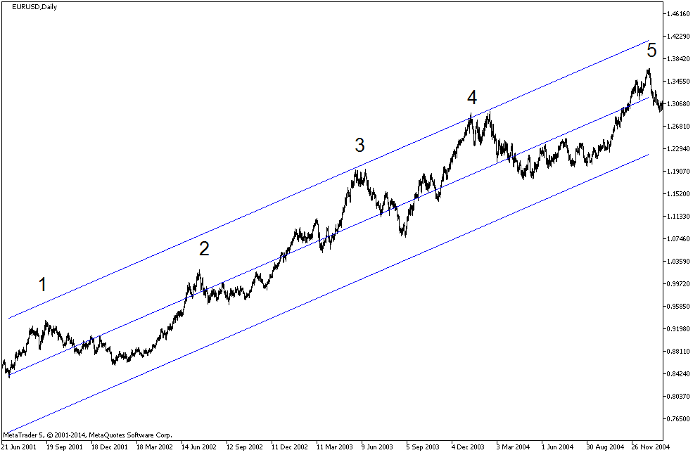

<!DOCTYPE html>
<html>
</html>
<head>
  <meta charset="utf-8">
  <meta http-equiv="X-UA-Compatible" content="IE=edge">
  <title>外汇站（fx-z.com） - 艾略特波浪理论基础知识</title>
  <meta name="description" content="">
  <meta name="viewport" content="width=device-width, initial-scale=1">
  <meta name="robots" content="all,follow">
  <!-- Bootstrap CSS-->
  <link rel="stylesheet" href="vendor/bootstrap/css/bootstrap.min.css">
  <!-- Font Awesome CSS-->
  <link rel="stylesheet" href="vendor/font-awesome/css/font-awesome.min.css">
  <!-- Google fonts - Roboto-->
  <link rel="stylesheet" href="https://fonts.googleapis.com/css?family=Roboto:400,300,700,400italic">
  <!-- owl carousel-->
  <link rel="stylesheet" href="vendor/owl.carousel/assets/owl.carousel.css">
  <link rel="stylesheet" href="vendor/owl.carousel/assets/owl.theme.default.css">
  <!-- theme stylesheet-->
  <link rel="stylesheet" href="css/style.default.css" id="theme-stylesheet">
  <!-- Custom stylesheet - for your changes-->
  <link rel="stylesheet" href="css/custom.css">
  <!-- Favicon-->
  <link rel="shortcut icon" href="img/favicon.png">
  <!-- Tweaks for older IEs--><!--[if lt IE 9]>
    <script src="https://oss.maxcdn.com/html5shiv/3.7.3/html5shiv.min.js"></script>
    <script src="https://oss.maxcdn.com/respond/1.4.2/respond.min.js"></script><![endif]-->
</head>
<body>
  <div id="all">
    <div class="container-fluid">
      <div class="row row-offcanvas row-offcanvas-left"> 
        <!--   *** SIDEBAR ***-->
        <div id="sidebar" class="col-md-4 col-lg-3 sidebar-offcanvas">
          <div class="sidebar-content">
            <h1 class="sidebar-heading"> <a href="https://fx-z.com">fx-z.com</a></h1>
            <p class="sidebar-p">介绍外汇相关的基本知识，告诉您如何进行自己的技术面和基本面分析，讲解先进的交易理念，并且为您阐述失败交易者与专业交易者之间的真正区别。 </p>
            <p class="sidebar-p">通过这些课程的学习，您将学会如何根据自己的优势来应用情绪分析，还将了解真实世界的事件会对货币汇率产生什么影响，央行在外汇市场中所发挥的作用，以及交易者在颇受欢迎的即期外汇交易中有哪些选择方案。 </p>
            <ul class="sidebar-menu">
                <!-- Link-->
                <li class="sidebar-item"><a href="https://fx-z.com" class="sidebar-link">首页</a></li>
                <!-- Link-->
                <li class="sidebar-item"><a href="cihui.html" class="sidebar-link">外汇词汇</a></li>
                <!-- Link-->
                <li class="sidebar-item"><a href="ebook.html" class="sidebar-link">获取外汇电子书</a></li>
            </ul>
            <p class="social"><a href="https://www.forextimechina.com.cn/zh?form=IZIN" target="_blank"data-animate-hover="pulse" class="external facebook"><i class="fa fa-eur"></i></a><a href="https://www.forextimechina.com.cn/zh?form=IZIN" target="_blank" data-animate-hover="pulse" class="external gplus"><i class="fa fa-gbp"></i></a><a href="https://www.forextimechina.com.cn/zh?form=IZIN" target="_blank" data-animate-hover="pulse" class="external twitter"><i class="fa fa-rmb"></i></a><a href="https://www.forextimechina.com.cn/zh?form=IZIN" target="_blank" title="" class="external instagram"><i class="fa fa-dollar"></i></a><a href="https://www.forextimechina.com.cn/zh?form=IZIN" target="_blank" data-animate-hover="pulse" class="email"><i class="fa fa-money"></i></a></p>
            <div class="copyright text-center text-md-left">
             
              
            </div>
          </div>
        </div>
        <!--   *** SIDEBAR END ***  -->
        <!--   *** DETAIL ***-->
        <div class="col-md-8 col-lg-9 content-column white-background">
          <div class="small-navbar d-flex d-md-none">
            <button type="button" data-toggle="offcanvas" class="btn btn-outline-primary"> <i class="fa fa-align-left mr-2"></i>菜单</button>
            <h1 class="small-navbar-heading"> <a href="https://fx-z.com/9-4.html">下一篇 </a></h1>
          </div>
          <div class="row">
            <div class="col-xl-10">
              <div class="content-column-content">
                <h1>艾略特波浪理论基础知识</h1>
    <p>
    艾略特波浪理论由 Ralph N. Elliott 于 1938 年在《波浪理论》一书中提出，并在其 1946 年所著的《自然法则：宇宙的秘密》一书中被进一步阐述。1978 年， Robert Prechter 和 A.J. Frost 在他们合著的《艾略特波浪理论：市场行为的关键》一书中进一步推广了该理论。Prechter 一共创作了 14 本与市场行为相关且主要介绍艾略特波浪理论的书籍。
</p>
<p>
    许多杰出、成功的市场庄家，包括对冲基金经理 Paul Tudor Jones 皆支持艾略特波浪理论。之后，艾略特波浪理论迅速被外汇行业采用，并早在 1982 年开始正式使用。如今，您能找到数百本介绍艾略特波浪理论的书籍，而且，许多软件承诺帮您判别波浪。
</p>
<p>
    同样，也有许多杰出、成功的市场玩家认为艾略特波浪理论未经证实，且极为主观。作为公认的非市场玩家，顶级数学家 Benoit Mandelbrot 也怀疑波浪的预测价值。Mandelbrot 著有无数关于金融价格分形特征的文章及书籍。其他数学家指出，经验数据（竟然几乎总是从股票价格得出）无法验证任何统计推断。
</p>
<p>
    最好的方法是，让持两种观点的人互相打一架，否则清醒、理智的人会对艾略特波浪理论嗤之以鼻。显然，从大部分持续时间足够长的图表中可以看出，价格走势确实呈现波浪式形态。“看浪”的最佳方法之一是沿着每日价格图绘制线性回归通道。例如，请查阅下图。这是一张 2001 年 1 月至 2005 年 6 月的 EUR/USD 每日价格图表。上面清晰可见五个上升趋势推动浪，且伴有调整浪。
</p>
<p>
     长期 EUR/USD 图表显示五个上升趋势推动浪且伴有调整浪
</p>
<p>
    当您试图采用艾略特波浪计数以及其它具体的理论内容时，您会发现，实际上，市场价格几乎从未提供清晰的数浪方式和明确的预测。艾略特波浪理论的支持者称总有例外发生，或时间周期有误，或其它理由，以此为借口来解释为何波浪走势与“理论”所述不同。
</p>
<p>
    是为何艾略特波浪理论未能得到科学验证的原因——在自然科学中，一种假设应能经受反复测试，而且每个人都能复制结果；经过多次重复测试均未能获得认可的假设将被标记为“伪论”并且被抛弃。不过本例情况不同。虽然艾略特波浪理论从未被证实，但有大量交易者相信这一理论并且按它操作。新手交易者需要确定自己是否想花费时间和精力来学习一个失败的假设。常识告诉您不会，但艾略特波浪理论及其核心要素斐波那契数列已经渗透外汇市场，以致于如支撑线断裂一样，我们有时能正确预测自证预言。如果多数或接近多数的主要市场参与者对某种结果有宗教般的信仰，他们会推动这种结果出现。因此，您至少可以学习一些关于艾略特波浪理论的基础知识，作为一种交易管理防卫措施。
</p>
<p>
    其核心理念是，市场心理首先按照上升推动浪或“驱动”浪运动，然后经过获利了结、重新考虑或某种其它原因之后，出现下跌调整浪——但并不回到起点。向上推动浪共有 3 个波浪，其中间隔有 2 个调整浪，而且经过最高的高位后，最后一次调整也形成波浪——共 3 个波浪，2 个下跌，中间 1 个上升。完整的艾略特波浪周期包括 8 个波浪。
</p>
<p>
    首个上升推动浪出现后，紧跟一个下跌调整浪。然后，第二道上推力为价格带来第二个上升推动浪，接着再次出现调整浪，不过这一个调整浪的跌幅不如前一个调整浪的跌幅大。之后，第三个上升浪出现；人们认为，这是最后一个波浪，通常也是最大的波浪。第 3 个上升浪出现后，几乎一切皆有可能发生（包括第 4 或第 5 个上升浪），或者走势完全崩溃，不过艾略特波浪分析师尽可能在靠近第 3 个上升浪顶部的位置离场。请查看下图。它显示上升浪为奇数（1，3，5），下跌浪为偶数（2，4）：
</p>
<p>
    图片: https://uploader.shimo.im/f/cOZ4SWtxM8MxVfT4.png经典艾略特波浪计数
</p>
<p>
    T虽然我们发现，外汇行情中出现五个上升浪较为常见，但“三个上升浪”理念已被广泛接受。更为复杂和疑难的是调整浪。调整浪有自己的小浪结构，而且通过字母，而不是数字表示。第一个下跌浪为 a 浪，然后调整浪本身出现一次小调整，其调整方向与原推动浪的方向相同，标记为 b 浪，然后出现第 3 个下跌浪，标记为 c。为了让图表更复杂，一些分析师将第一组字母大写，第二组小写，字母波浪范围内的小波动用罗马数字标记。最后的图表显示，上一图表描述的事件之后发生的事情。这是三个调整浪。如您所见，与上升推动浪相似，它也持续到另外两个波浪。
</p>
<p>
    图片: https://uploader.shimo.im/f/rkE9YXZrDMczOLiR.png艾略特波浪中的调整浪计数
</p>
<p>
    批评人士肯定会说，这些数浪方式无法正确地判断和标记波浪。这是艾略特波浪理论主要问题之一——没有单一无误或确定性的数浪方法。连理论支持者也承认，如果您的数浪结果“错误”，您得重新开始计数。如果您看到的图表由一位经验丰富的艾略特波浪分析师绘制，数浪似乎很清晰，且一切水到渠成。但自己操作又是另一回事。
</p>
<p>
    艾略特波浪的优点在于其核心理念——推动浪和调整浪——很符合市场参与者的行为方式。早期热情随着动量及获利了结的想法趋于平静而逐渐消退，但恢复涨势后，看涨情绪也重新被点燃。这不涉及任何神奇效果，每个时间周期都是如此往复。Elliott 本人是否了解市场的完全分形特征，这一点尚未明确，因为 Elliott 研究波浪理论时，Mandelbrot 的开创性著作尚未问世，但 Elliott 为市场行为添加了我们如今称之为“分形特征”的属性。艾略特波浪理论另一个更棘手的问题在于，Elliott 及其后继追随者认为，斐波那契数列是“宇宙的秘密”。这么说是为了严重夸大斐波那契数列的重要性，不过，有时它们确实能发挥一定的作用。
</p>
<p>
    <br/>
</p>
<p>
    <br/>
</p>
              </div>
            </div>
          </div>
        </div>
      </div>
    </div>
  </div>
  <!-- JavaScript files-->
  <script src="vendor/jquery/jquery.min.js"></script>
  <script src="vendor/popper.js/umd/popper.min.js"> </script>
  <script src="vendor/bootstrap/js/bootstrap.min.js"></script>
  <script src="vendor/jquery.cookie/jquery.cookie.js"> </script>
  <script src="vendor/owl.carousel/owl.carousel.min.js"></script>
  <script src="vendor/masonry-layout/masonry.pkgd.min.js"></script>
  <script src="js/front.js"></script>
</body>